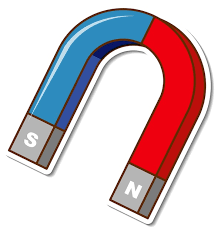
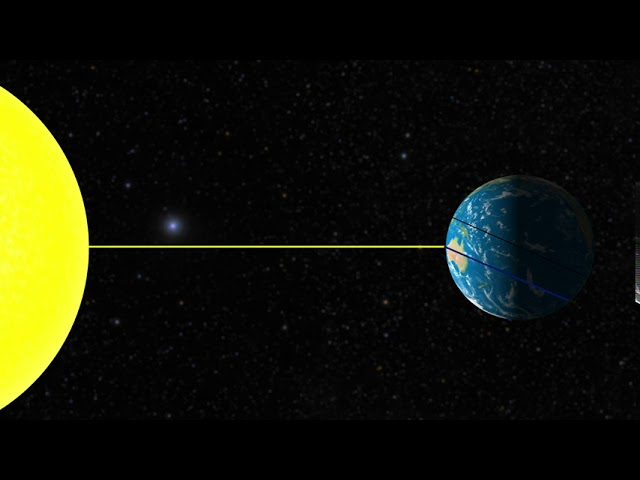
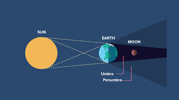

Question 1: What transports food throughout the plant?
Question 2: In a magnet, where is the magnetism the strongest?

Question 3: During photosysthesis, what do plants take in?
Question 4: What is the distance between Earth and the Sun?

Question 5: What occurs when the Earth come in-between the Sun and moon?

Question 6: What type of reaction happens when heat is given out?